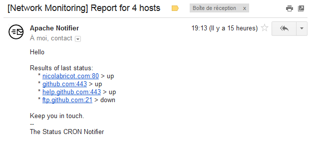

PHP Pinger PHP Pinger
PHP Pinger PHP PingerPHP Pinger is a light PHP library to check if an host is up or down.
It uses a socket and can check any host on any port, one or multiple port, can send you an e-mail report, and you can customize it to display some results on a web page.
See the examples page to see more.
| Label | host:port | Result |
|---|---|---|
| Google FR | google.fr:80 | online |
| Google SSL | www.google.com:443 | online |
| 404.google.com | 404.google.com:80 | offline |
| SSH example | example.com:22 | offline |
| Good example | example.com:80 | online |

Source code is hosted on Github by nicolabricot.
Fell free to fork it, improve it, and do a pull request :)